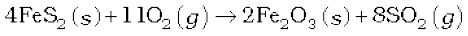
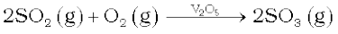
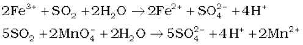
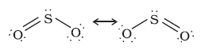

7.15 Sulphur Dioxide
Preparation
Sulphur dioxide is formed together with a little (6-8%) sulphur trioxide when sulphur is burnt in air or oxygen:
S(s) + O2(g) → SO2 (g)
In the laboratory it is readily generated by treating a sulphite with dilute sulphuric acid.
SO32-(aq) + 2H+ (aq) → H2O(l) + SO2 (g)
Industrially, it is produced as a by-product of the roasting of sulphide ores.

The gas after drying is liquefied under pressure and stored in steel cylinders.
Properties
Sulphur dioxide is a colourless gas with pungent smell and is highly soluble in water. It liquefies at room temperature under a pressure of two atmospheres and boils at 263 K.
Sulphur dioxide, when passed through water, forms a solution of sulphurous acid.
It reacts readily with sodium hydroxide solution, forming sodium sulphite, which then reacts with more sulphur dioxide to form sodium hydrogen sulphite.
2NaOH + SO2 → Na2SO3 + H2O
Na2SO3 + H2O + SO2 → 2NaHSO3
In its reaction with water and alkalies, the behaviour of sulphur dioxide is very similar to that of carbon dioxide.
Sulphur dioxide reacts with chlorine in the presence of charcoal (which acts as a catalyst) to give sulphuryl chloride, SO2Cl2. It is oxidised to sulphur trioxide by oxygen in the presence of vanadium(V) oxide catalyst.
SO2(g) + Cl2 (g) → SO2Cl2(l)

When moist, sulphur dioxide behaves as a reducing agent. For example, it converts iron(III) ions to iron(II) ions and decolourises acidified potassium permanganate(VII) solution; the latter reaction is a convenient test for the gas.


The molecule of SO2 is angular. It is a resonance hybrid of the two canonical forms:
Uses: Sulphur dioxide is used (i) in refining petroleum and sugar (ii) in bleaching wool and silk and (iii) as an anti-chlor, disinfectant and preservative. Sulphuric acid, sodium hydrogen sulphite and calcium hydrogen sulphite (industrial chemicals) are manufactured from sulphur dioxide. Liquid SO2 is used as a solvent to dissolve a number of organic and inorganic chemicals.